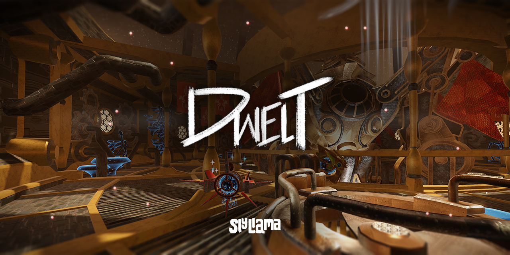
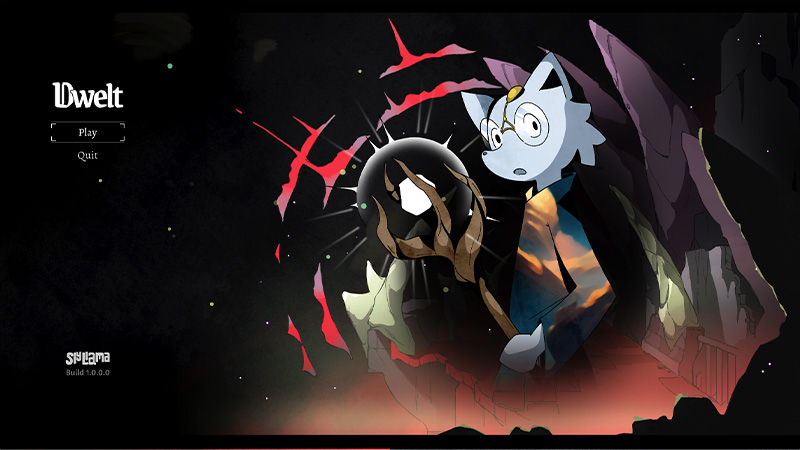
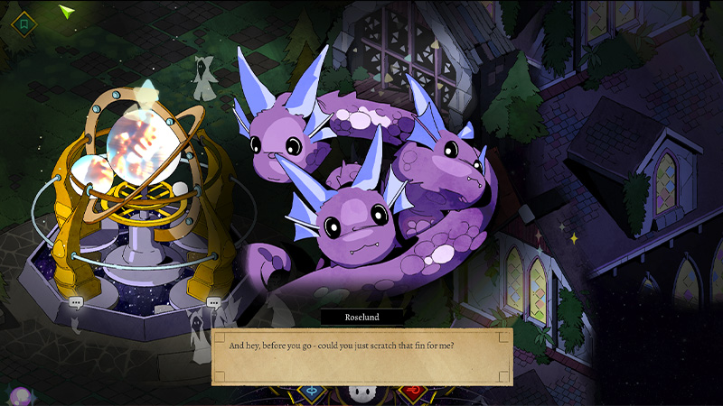
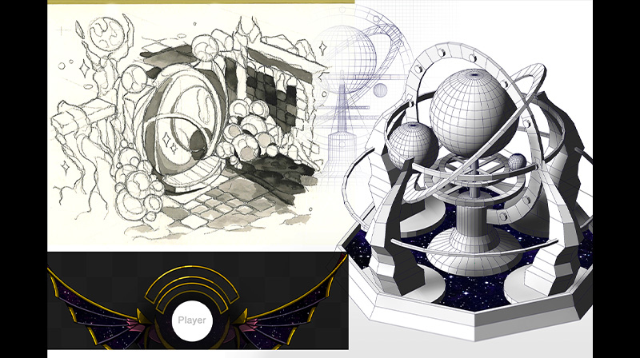
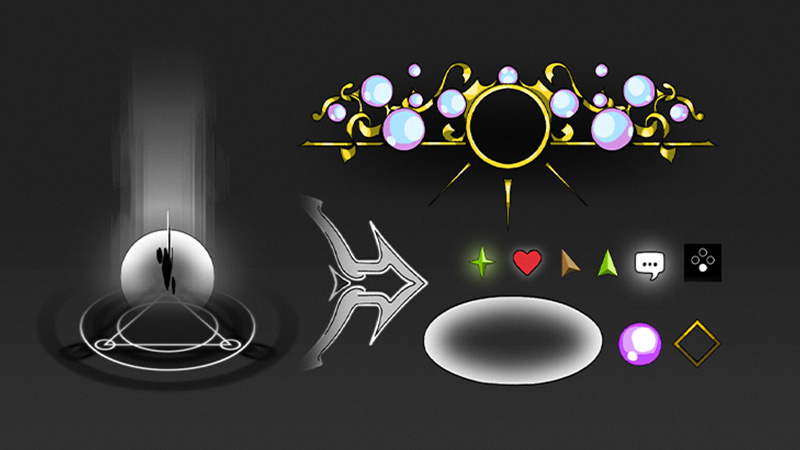
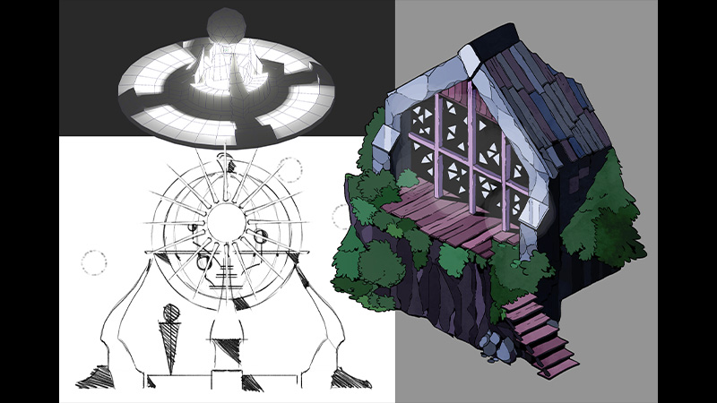
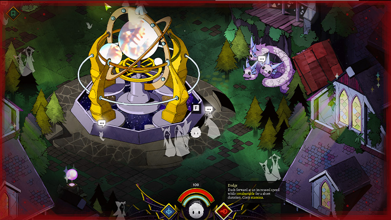

Sly
Dwelt
July 2024. A lot has changed since the 2D implementation of Dwelt; after realising that 3D development in Godot had become a lot more advanced, I had some success trying my hand at it. I've made the repository available on Github, and you can actually download runnable packages from the Releases page!
I should probably write some more about it at some point, but the long and short of it is that 3D Dwelt deals with a community of 'Scrapper' robots, a gang of mechs who harvest emotions from an infinitely big machine of souls all around them. It's another way to try and grapple with concepts of memory, death, and personhood.
I've put some more information on Dwelt up on my portfolio here! There is a video here too, which shows the game in action.
* * *
Dwelt has been a conceptual continuation of the ideas first practically explored in Scruffy! Most of what we could say about it is on that page, so here are some screenshots instead. I did do some writing more recently on this iteration of Scruffy itself; you can find it on cohost here!
Meet Roselund, our (big) little hydra. She is very wise! This was modeled in Blender first, and then traced over.
Some concepts for the more astral components of the game. It was fun to work on a good old-fashioned watercolour block after going digital for so long.
Various UI elements and visual game mechanic components. These were very rewarding to make - we want to explore UI further.
More architectural concepts! Again, we've found a fun workflow starting in Blender and then working over guide renders.
A screenshot of the game as it actually runs.